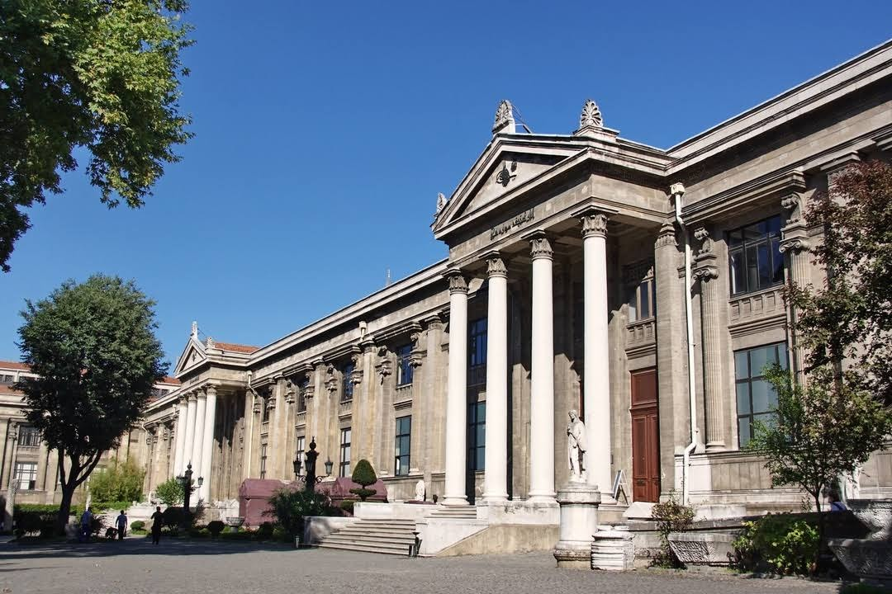

Osmanlı İmparatorluğu'ndan Türkiye Cumhuriyeti'ne miras kalmış bir kurum olan İstanbul Arkeoloji Müzeleri Türkiye'deki ilk müzecilik çalışmalarını bünyesinde toplar. Aslında Osmanlı'da tarihi eser toplama merakının izleri Fatih Sultan Mehmed döneminden itibaren takip edilebilir. Fakat sistemli bir şekilde müzeciliğin kurumsal olarak ortaya çıkışı İstanbul Arkeoloji Müzeleri'nin 1869 yılında 'Müze-Hümayuni ' yani İmparatorluk Müzesi olarak kuruluşuna denk gelir. Aya İrini Kilisesinde o güne değin toplanmış arkeolojik eserlerden oluşan Müze-i Hümayun İstanbul Arkeoloji Müzeleri'nin temelini oluşturur. Dönemin Maarif Nazırı Saffet Paşa, müze ile yakından ilgilenmiş, müzeye eser kazandırmak için kişisel çabalar sarf etmiştir. Ayrıca Galatasaray Lisesi öğretmenlerinden İngiliz asıllı Edward Goold'un müze müdürü olarak atanmasını sağlanmıştır. 1872 yılında Maarif Nazırı Ahmed Vefik Paşa bir dönem kaldırılmış olan Müze-i Hümayun'u Alman Dr. Phillip Anton Dethier'i müdür olarak atayarak tekrar kurar. Dr. Dethier'ın yaptığı çalışmalar sonucunda Aya İrini kilisesindeki mekân yetersiz kalır ve yeni bir inşaatın yapılması gündeme gelir. Maddi imkânsızlıklardan ötürü yeni bir bina yapılamaz fakat Fatih Sultan Mehmet döneminde yaptırılmış olan "Çinili Köşk" müzeye dönüştürülür. Hâlen İstanbul Arkeoloji Müzelerine bağlı olan Çinili Köşk restore edilerek 1880 yılında açılır. Büyük İskender heykeli Yapılış tarihi açısından bakıldığında İstanbul Arkeoloji Müzeleri kompleksi içerisinde en eski yapı Çinili Köşk'tür. Şu anda Türk çini ve seramik örneklerinin sergilendiği Çinili Köşk Müzesi, II. Mehmed'in İstanbul'da yaptırdığı sivil mimari örneklerinin en eskisidir. Yapıdaki Selçuklu etkisi göze çarpmaktadır. Kapısı üzerindeki çini kitabede inşa tarihinin Miladi 1472 olduğu yazılıdır ancak mimarı bilinmemektedir. 